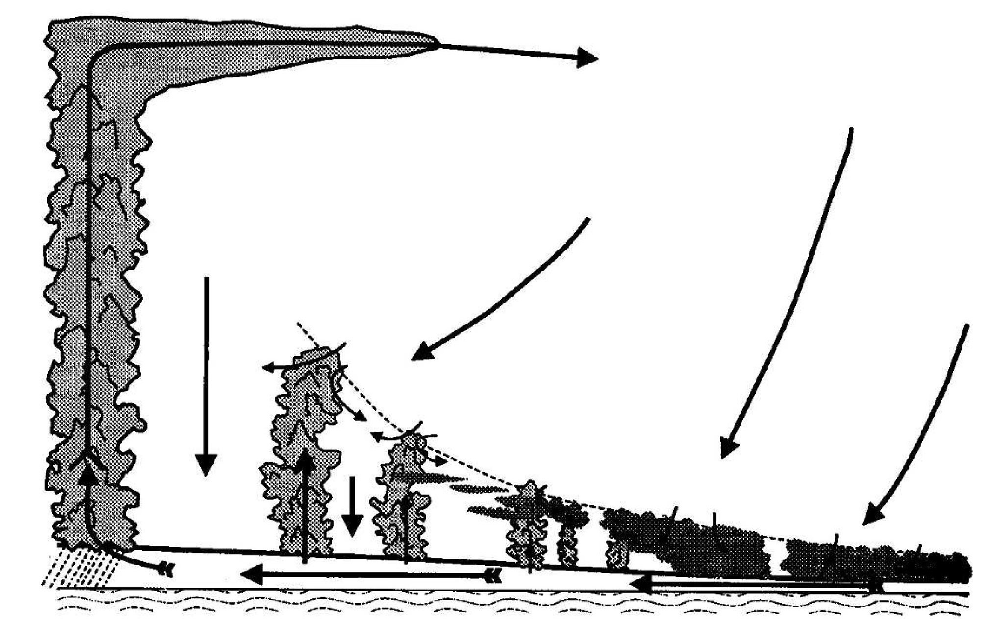
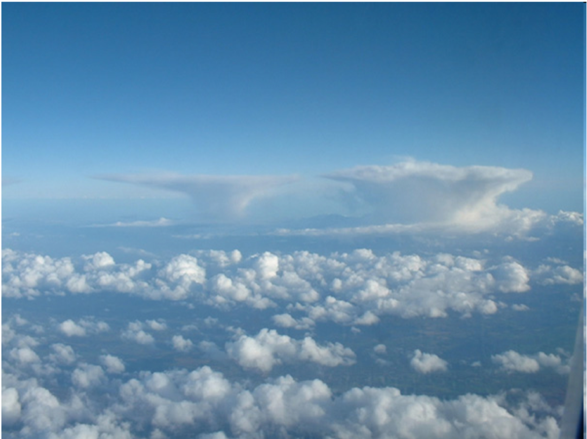
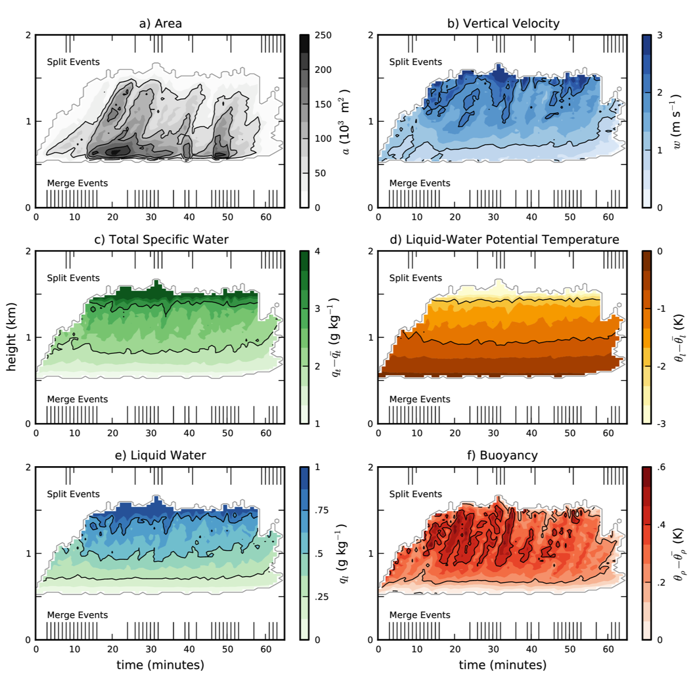

Cloud-capped boundary layer – models and observations#
A computer simulation of active and decaying clouds#
Red: positively bouyant, moving upward, containing liquid water (“cloud core”)
Yellow: liquid water, non-core
Grey: upward moving dry air (sub-cloud plumes)
{kind=link}
Importance for climate#
Small and large clouds are nonlinearly coupled via the Hadley circulation#
{kind=link}
and for comparison – the real thing#
{kind=link}
The System for Atmospheric Modelling Large Eddy Simulation (Khairoutdinov and Randall, 2003)#
Surface tracer flux with a 15 minute exponential decay lifetime
Explicit calculation of mass exchange between cloud and environment
Where does environmental air enter a cloud?#
Comparison of two calculation methods (tetrahedral vs. Romps)
{kind=link}
How long do boundary layer clouds live?#
{kind=link}
Some case studies:#
Tropical convection (Loh and Austin): 86 km x 86 km x 25 km with 50 meter resolution
{kind=link}
Cloud parameterizations in global climate models don’t aggree#
Tests of single column versions of climate models
Warm the ocean by 2 degrees – do clouds increase the heating by disappearing or decrease it by covering more of the ocean? This is “cloud feedback”
Half of the models get hotter (amplifying feedback), and half get cooler (stabilizing feedback)
{kind=link}
What is going on inside the models?#
It’s a fight between drying out (due to mixing of dry air from above) and getting moister (due to increased surface vapor flux from the warmer ocean)
{kind=link}
How does cloud mising depend on the large scale environemnt#
A lot of variability, but some trends in the “entrainment rate” \(\epsilon\)
{kind=link}
Other model and observational data#
Cabauw tower, Netherlands#
Atmospheric Radiation Monitoring Program, Southern Great Plains#
Atmospheric Radiation Monitoring Program, Alaska North Slope#
Atmospheric Radiation Monitoring Program, Azores#
NCAR field campaigns#
Boundary layer data from CMIP6#
References#
Dawe and Austin, MWR, 2010
Dawe and Austin, J. Atmos. Sci., 2011
Dawe and Austin, Atmos. Chem. Phys., 2012
Dawe and Austin, Atmos. Chem. Phys., 2013
Khairoutdinov and Randall, J. Atmos. Sci., 2003
Zhang et. al., JAMES, 2013